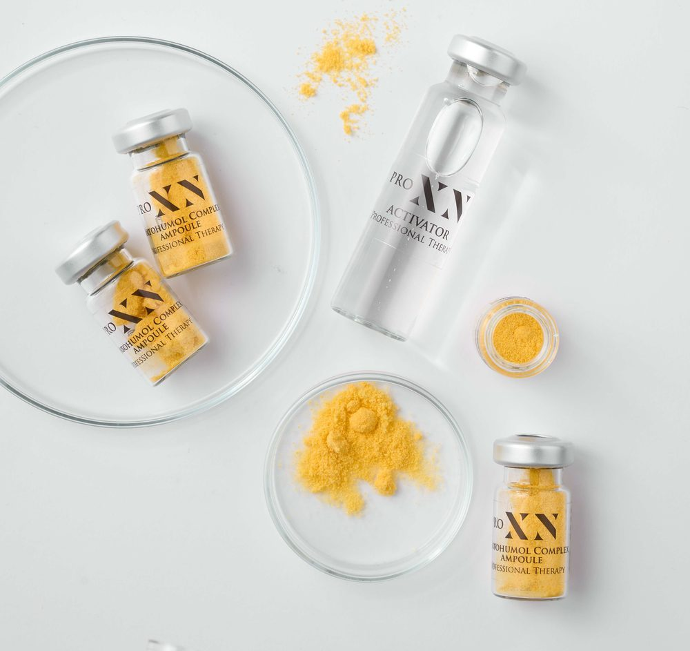
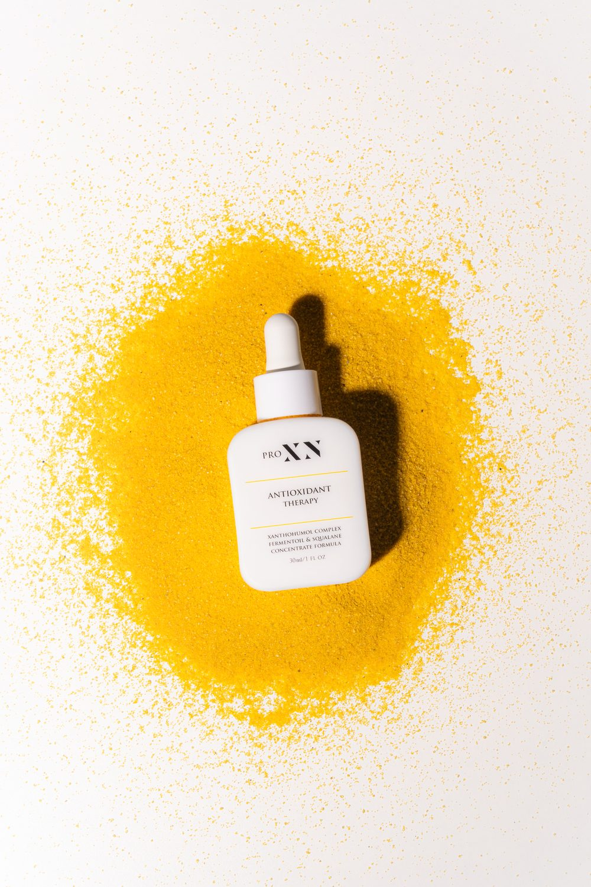

Hoidot · ProXN
ProXN-kasvohoito: kliininen ihonhoito herkälle, reaktiiviselle ja ikääntyvälle iholle
Kaikkea ihoa ei hoideta ärsyttämällä. Kun iho on ärtynyt, reaktiivinen tai ei siedä voimakkaita aktiiviaineita, tulokseen päästään poistamalla ihoa kuormittavat tekijät ja vahvistamalla sen omaa puolustusta. Sama pätee ikääntymisen merkkeihin silloin kun iho on samalla herkkä. ProXN-kasvohoito on tähän rakennettu ammattikäyttöön tarkoitettu hoito, jonka vaikuttava aine on Xanthohumol Complex.
Ensikäynti 200 euroa. Sisältää iho-analyysin ja ensimmäisen hoidon, ja lasketaan sarjaan mukaan.
Kohderyhmä
Kenelle ProXN-kasvohoito sopii
Hoito on rakennettu iholle joka ei siedä voimakkaita menetelmiä. Nämä ovat tilanteita joissa se on yleisimmin perusteltu.
- Herkkä, ärtynyt tai reaktiivinen iho
- Iho joka ei siedä voimakkaita aktiiviaineita
- Ruusufinni, couperosa ja punoitukseen taipuvainen iho
- Atooppinen iho
- Toistuva akne, seborrea ja tulehduksen jälkeinen pigmentoituminen
- Iho, joka on vaurioitunut vääränlaisista kotihoitotuotteista
- Ikääntymisen merkit silloin kun iho on samalla herkkä tai reaktiivinen
- Palautuminen invasiivisemmista hoidoista, kuten mikroneulauksesta tai laserhoidosta
Vaikutusmekanismi
Mitä hoito tekee iholle
Herkän ja reaktiivisen ihon taustalla on tyypillisesti kaksi asiaa: ihon oma suojakerros on heikentynyt ja tulehdusreaktio on jäänyt päälle. Voimakkaat hoidot pahentavat molempia. ProXN-hoito puuttuu näihin suoraan.
Xanthohumol Complex vaikuttaa kolmeen eri mekanismiin, ja ne selittävät miksi hoito tehoaa juuri reaktiiviseen ihoon.
Yhdessä nämä kolme mekanismia tuottavat ihon, joka reagoi vähemmän, punoittaa vähemmän ja kestää enemmän. Herkän ihon kohdalla se on tulos, jota voimakkaammilla menetelmillä ei saavuteta, koska ne lisäävät juuri sitä kuormaa jota ollaan yrittämässä vähentää.
1. Vapaat radikaalit ja oksidatiivinen stressi
Vapaa radikaali on epävakaa molekyyli, jolta puuttuu elektroni. Vakautuakseen se sieppaa puuttuvan elektronin lähimmästä rakenteesta, esimerkiksi solukalvon rasvahaposta, proteiinista tai perimästä. Vaurioitunut rakenne muuttuu itse radikaaliksi, ja syntyy ketjureaktio.
Iholla vapaita radikaaleja syntyy jatkuvasti auringon ultraviolettisäteilystä, ilman epäpuhtauksista ja aivan tavallisesta aineenvaihdunnasta. Terveellä iholla on oma puolustusjärjestelmä, joka neutraloi ne. Kun kuorma ylittää puolustuskyvyn, tilaa kutsutaan oksidatiiviseksi stressiksi. Se näkyy ihon heikentyneenä kestävyytenä, punoituksena ja ennenaikaisina ikääntymisen merkkeinä.
Antioksidantti katkaisee ketjun luovuttamalla radikaalille sen puuttuvan elektronin. Xanthohumol Complex toimii juuri näin. Hoidossa käytettävä ampulli sisältää lisäksi superoksididismutaasia, joka on ihon oma antioksidanttientsyymi, sekä C-vitamiinijohdannaista ja koentsyymi Q10:tä. Ihoa ei siis vain suojata ulkoapäin, vaan sen omaa puolustusjärjestelmää täydennetään.
2. Tulehdusreaktio, joka on jäänyt päälle
Solut viestivät keskenään välittäjäaineilla, joita kutsutaan sytokiineiksi. Osa niistä ylläpitää tulehdusreaktiota. Kolme keskeistä ovat interleukiini 1-beeta, interleukiini 6 ja TNF-alfa. Nimet ovat hankalia, mutta tehtävä on yksinkertainen: ne kertovat kudokselle että puolustusreaktio on pidettävä käynnissä.
Akuutissa tilanteessa tämä on hyödyllistä. Ongelma syntyy, kun viesti ei sammu. Reaktiivisessa ihossa, ruusufinnissä ja atooppisessa ihossa tulehdus jää matalalle tasolle päälle pitkäksi aikaa. Iho punoittaa, kirvelee ja reagoi asioihin joihin sen ei pitäisi reagoida. Samalla pitkittynyt tulehdus kuluttaa ihon rakenteita.
Xanthohumolin on osoitettu laskevan näiden kolmen välittäjäaineen tasoja. Käytännössä se hiljentää viestin sen sijaan että peittäisi oireen. Tämä on syy siihen, miksi hoito sopii ärtyneelle iholle eikä pahenna tilannetta niin kuin voimakkaat aktiiviaineet usein tekevät.
3. Kollageenia hajottavat entsyymit
Iho rakentaa ja hajottaa kollageeniaan koko ajan. Hajottavasta puolesta vastaavat matriksin metalloproteinaasit, entsyymit jotka pilkkovat kollageeni- ja elastiinisäikeitä. Tämä on normaalia kudoksen uusiutumista.
Ultraviolettisäteily ja pitkittynyt tulehdus kiihdyttävät näiden entsyymien toimintaa. Silloin hajotus alkaa voittaa rakentamisen, ja iho menettää kimmoisuuttaan. Xanthohumoli estää näitä entsyymejä, eli hidastaa hajottavaa puolta.
Tämä kannattaa erottaa selvästi mikroneulauksesta, joka toimii toisin päin: se käynnistää uuden kollageenin rakentamisen. ProXN hidastaa menetystä, mikroneulaus lisää tuotantoa. Kyse on kahdesta eri työkalusta.
Kaksi eri mekanismia
Mikroneulaus vai ProXN?
Kliininen mikroneulaus
Kliininen mikroneulaus perustuu hallittuun vaurioon: iho korjaa itsensä ja rakentaa samalla uutta kollageenia. Se on tehokas menetelmä, mutta se edellyttää ihoa joka kestää vaurion ja paranee ennustettavasti.
ProXN-kasvohoito
ProXN toimii päinvastaisesta suunnasta. Se ei tuota vauriota vaan poistaa kuormaa: vähentää tulehdusta, täydentää antioksidanttipuolustusta ja palauttaa suojakerroksen toimintaa. Reaktiivisen ihon kohdalla tämä on se mekanismi joka toimii, ja vaurioon perustuva menetelmä olisi askel taaksepäin.
Kysymys ei ole kumpi hoito on parempi, vaan mitä ihossa halutaan muuttaa. Rakenteellinen muutos, kuten arpi tai syvä juonne, vaatii uutta kollageenia, ja siihen pystyy mikroneulaus. Reaktiivisuus, pitkittynyt tulehdus ja heikentynyt suojakerros ovat eri ongelma, eikä mikroneulaus tavoita niitä lainkaan. Herkällä iholla se päinvastoin lisää juuri sitä kuormaa jota pitäisi vähentää.
Hoidot eivät myöskään sulje toisiaan pois. ProXN on kehitetty myös invasiivisten hoitojen jälkeiseen palautumiseen, joten sitä käytetään mikroneulauksen rinnalla silloin kun iho tarvitsee molempia. Kumpi tai kumpikin on sinun ihollesi oikea, arvioidaan ensikäynnillä.
Vaikuttava aine
Xanthohumol Complex
Xanthohumoli on humalan emikukinnoista peräisin oleva flavonoidi eli kasvin oma suoja-aine. Se on tunnettu ja paljon tutkittu yhdiste, mutta ihonhoidossa uusi, koska se hajoaa vedessä. Sitä ei ole aiemmin saatu pysymään vakaana kosmetiikassa.
ProXN ratkaisi ongelman sulkemalla xanthohumolimolekyylit syklodekstriinin sisään. Syklodekstriini on sokerimolekyyleistä muodostuva rengas, jonka ontto keskusta suojaa herkkää ainetta hajoamiselta. Tätä yhdistelmää kutsutaan Xanthohumol Complexiksi. Se on syy siihen miksi valmistajan mittaustulokset koskevat nimenomaan kompleksia eivätkä puhdasta xanthohumolia.
Ampullissa on xanthohumolin lisäksi neljä muuta ainetta, jotka tukevat samaa tehtävää:
- Superoksididismutaasi on ihon oma antioksidanttientsyymi. Hoito siis täydentää sitä puolustusta joka iholla on jo valmiina.
- C-vitamiinin vakaa muoto, joka ei ärsytä ihoa kuten puhdas C-vitamiini. Se on kollageenin muodostuksen edellytys.
- Niasiiniamidi eli B3-vitamiini vahvistaa ihon suojakerrosta ja vähentää punoitusta.
- Koentsyymi Q10 on solujen energia-aineenvaihdunnan antioksidantti.
Aktivaattori, johon jauhe sekoitetaan, sisältää hopeaa. Se ehkäisee bakteeriperäisiä jälki-infektioita.

Näyttö
Mitä tutkimus sanoo
Xanthohumolista on julkaistu yli 800 tutkimusta, ja se on yksi tutkituimmista kasviperäisistä antioksidanteista. Alla on mitä siitä ja tästä hoitosarjasta tiedetään, ja millä tavalla se on mitattu.
Tutkimukset ovat pieniä ja valmistajan teettämiä, eikä niissä ole verrokkiryhmää. Osa mittauksista on laitteellisia, osa perustuu osallistujien omaan arvioon. Näyttö on siis sen tasoista mitä ammattikäyttöön tarkoitetuilta hoitosarjoilta yleensä löytyy: se osoittaa suunnan ja kohderyhmän, ei vaikutuksen suuruutta väestötasolla. Olennaista on, että tutkimusten kohderyhmä on sama kuin hoidon kohderyhmä, eli herkkä, reaktiivinen ja tulehtunut iho.
Antioksidanttikapasiteetti
Valmistajan tieteellisessä aineistossa Xanthohumol Complexin antioksidanttiaktiivisuus on keskimäärin kolmekymmenkertainen C-vitamiiniin verrattuna. Puhdas xanthohumoli vastaa suunnilleen C-vitamiinia, eli ero syntyy kompleksoinnista.
Luku on peräisin laboratoriomittauksesta, jossa seurattiin ydinmagneettisella resonanssispektroskopialla ditiolin hapettumista vetyperoksidin läsnä ollessa. Se kertoo yhdisteen kyvystä neutraloida hapettavaa kuormaa koeputkessa. Iholla lopputulokseen vaikuttavat lisäksi imeytyminen, pitoisuus ja käyttötiheys.
Solutason tutkimus
Soluviljelmissä xanthohumolin on osoitettu vahvistavan antioksidanttipuolustusta, rauhoittavan tulehdusreaktiota, vähentävän pigmentin muodostusta, estävän matriksin metalloproteinaaseja ja tukevan kollageenin ja elastiinin synteesiä.
Nämä ovat ne mekanismit joihin hoidon vaikutus perustuu, ja ne on osoitettu solutasolla. Kuinka voimakkaana sama vaikutus näkyy ihmisen iholla, on eri kysymys, ja siihen vastaavat ihmisillä tehdyt tutkimukset.
Ihmisillä tehdyt tutkimukset
Hoitosarjasta on tehty neljä tutkimusta, joissa kussakin oli kymmenen osallistujaa.
- Ärsytystestissä iho ärsytettiin mekaanisesti ja punoitusta mitattiin laitteella. Punoitus laski keskimäärin 20 prosenttia viisitoista minuuttia levityksen jälkeen.
- Käyttötutkimuksessa arvioitiin valmistajan lupaamat ominaisuudet. Ominaisuus katsottiin vahvistetuksi, jos yli puolet osallistujista koki sen toteutuvan.
- Ihotautikeskuksen kahden kuukauden tutkimuksessa hoitoa käytettiin ruusufinniä ja atooppista ihottumaa sairastaville. Arviointi tehtiin VISIA-ihoanalyysilaitteella ja osallistujien omilla arvioilla. Ärsytys lievittyi, punoitus väheni ja kosteustaso parani.
- Toisessa saman keskuksen kahden kuukauden tutkimuksessa herkkäihoisilla havaittiin kiinteyden, kimmoisuuden ja kosteustason paranemista sekä ihon pinnan tasoittumista.
Käynti vaihe vaiheelta
Hoidon kulku
Koko käynti kestää noin tunnin, josta hoito-osuus on 30–40 minuuttia.
Ensin iho puhdistetaan kahdessa vaiheessa. Puhdistusöljy poistaa meikin ja epäpuhtaudet vahingoittamatta ihon omaa rasvakerrosta, ja sen jälkeen iho tasapainotetaan kosteuttavalla suihkeella.
Seuraavaksi iho käsitellään hellävaraisella polyhydroksihappoliuoksella. Se irrottaa sarveiskerroksen kuollutta solukkoa ja parantaa seuraavien vaiheiden imeytymistä. Polyhydroksihapot ovat suurikokoisia molekyylejä, jotka imeytyvät hitaammin kuin tavalliset hedelmähapot, ja siksi ne sopivat herkälle iholle.
Tämän jälkeen sekoitetaan Xanthohumol Complex -ampulli. Vaikuttava aine on kylmäkuivattua jauhetta, koska xanthohumoli hajoaa vesiliuoksessa. Jauhe ja aktivaattori yhdistetään vasta hoitohetkellä, jolloin aine on täydellä teholla iholle levitettäessä. Ampullia ei huuhdella pois.
Ampullin päälle asetetaan steriili biosellu-naamio, joka avataan pakkauksestaan asiakkaan nähden. Naamio sitoo vettä ja muodostaa iholle tiiviin kalvon, joka tehostaa vaikuttavien aineiden imeytymistä. Naamio on iholla 15–30 minuuttia hoidosta riippuen.
Hoidon päätteeksi iholle levitetään antioksidanttihoito ja aurinkosuoja, ja käymme läpi jälkihoito-ohjeet.
Ikääntyvä iho
Ikääntymisen merkit
Ihon ikääntymistä ei aiheuta pelkkä ajan kuluminen. Suurin osa näkyvistä muutoksista on valovanhenemista, ja sen taustalla ovat samat kaksi tekijää joihin tämä hoito kohdistuu: oksidatiivinen stressi ja pitkittynyt matala-asteinen tulehdus. Ne kiihdyttävät kollageenia hajottavien entsyymien toimintaa, jolloin ihon tukirakenne ohenee nopeammin kuin sitä ehditään rakentaa.
Hoito puuttuu tähän kolmesta suunnasta. Xanthohumol Complex täydentää ihon antioksidanttipuolustusta ja hillitsee tulehdusta, se estää kollageenia ja elastiinia hajottavia entsyymejä, ja jokainen hoito päättyy aurinkosuojaan. Auringolta suojautuminen on edelleen vaikuttavin yksittäinen keino hidastaa ihon ikääntymistä.
Mihin hoito ei yllä
Tämä hoito hidastaa menetystä ja suojaa. Uuden kollageenin rakentaminen on mikroneulauksen tehtävä, ja jos iho kestää mikroneulauksen, se on ikääntymisen merkkeihin tehokkaampi valinta.
ProXN on siksi perusteltu vaihtoehto silloin, kun iho on samaan aikaan ikääntyvä ja herkkä. Reaktiivisella iholla voimakas hoito lisää juuri sitä tulehdusta ja oksidatiivista kuormaa joka ikääntymistä ajaa, jolloin lopputulos voi jäädä huonommaksi kuin hellävaraisemmalla reitillä. Kumpi tie on sinun ihollesi oikea, arvioidaan ensikäynnillä.
Valmistautuminen
Ennen ja jälkeen hoidon
Ennen hoitoa
Hoito ei vaadi valmistautumista. Aktiiviaineita ei tarvitse tauottaa etukäteen eikä auringonottoa rajoittaa, joten hoitoon voi tulla silloin kun sopii. Meikin voi olla kasvoilla, koska hoito alkaa joka tapauksessa kahden vaiheen puhdistuksella.
Hoidon jälkeen
Hoidon jälkeen ei ole rajoituksia. Iho ei ole rikki, joten meikin voi laittaa saman tien ja arkeen voi palata suoraan.
Yksi suositus kuitenkin annetaan. Hoidon jälkeen iholle jää vaikuttavia aineita työskentelemään, joten saunan ja uinnin siirtäminen seuraavaan päivään kannattaa, jotta hoidosta saa täyden hyödyn. Kyse on hyödyn maksimoinnista, ei turvallisuudesta.
Hoitoa voi halutessaan tehostaa kotihoitotuotteilla, mutta hoito on kokonainen ja toimii täysin ilmankin. Kotihoito on lisä, ei edellytys.
Hoidot ja sarjat
Kaksi hoitoa ja niiden sarjat
ProXN-kasvohoidosta on kaksi versiota. Kumpi sinulle sopii, päätetään ensikäynnillä ihon tilanteen perusteella.
Yksi käynti rauhoittaa ihoa, mutta ei muuta sen toimintaa pysyvästi. Ihon oma suojakerros ja antioksidanttipuolustus vahvistuvat toistojen kautta, ja siksi tulokset syntyvät sarjana. Sarjoja on kaksi, ja ne ovat samat molemmissa hoidoissa.
190 € / hoito 570 €
180 € / hoito 1080 €
Kolme hoitoa ei ole lyhennetty versio kuudesta. Se on kohta jossa nähdään mihin suuntaan iho on menossa, ja jossa päätetään yhdessä jatketaanko. Osalla kolme riittää, osalla se on puolimatka. Kumpi tilanne on kyseessä, sen näkee vasta ihosta eikä etukäteen. Ensikäynnin hoito lasketaan sarjaan mukaan, joten sarjan hintaan sisältyy myös ensimmäinen käynti.
Hoitojen väli on tiheämpi kuin mikroneulauksessa, jossa väli on neljä viikkoa. Ero johtuu mekanismista. Mikroneulauksessa odotetaan ihon paranemista ja kollageenin kypsymistä, mikä vie oman aikansa. ProXN-hoidossa paranemisjaksoa ei ole odotettavana, joten vaikutusta voidaan vahvistaa tiheämmin.
Rauhoittava hoito herkälle iholle
Rauhoittava hoito (Overreactive Rescue) on tarkoitettu herkälle, reaktiiviselle ja ylireagoivalle iholle. Se palauttaa ihon uloimman kerroksen eheyttä ja vahvistaa antioksidanttipuolustusta. Tämä on lähtökohta silloin, kun iho punoittaa, kiristää tai reagoi herkästi.
Hoito tehdään protokollan mukaan kerran viikossa, joten kolmas käynti on kahden viikon kuluttua ensimmäisestä. Ihon suojakerros ja antioksidanttipuolustus reagoivat päivissä ja viikoissa, joten siinä ajassa ehtii tapahtua se mitä hoidolta odotetaan. Punoitus, kiristys ja reaktiivisuus ovat kolmanteen kertaan mennessä yleensä jo rauhoittuneet.
Aknehoito
Aknehoito (Acne Rescue) on tarkoitettu toistuvaan akneen, seborreaan ja tulehduksen jälkeiseen pigmentoitumiseen. Happokäsittely tehdään kolmena kerroksena ja mukaan tulee laktoferriiniseerumi, joka tasapainottaa ihon mikrobiomia ja tukee korjausprosesseja.
Hoito tehdään kahden viikon välein, joten kolmas käynti on neljännellä viikolla. Tulehtuneet muutokset ovat silloin useimmiten rauhoittuneet, koska hoito vaikuttaa suoraan olemassa olevaan tulehdukseen. Sen sijaan tukkeutuneet ihohuokoset ja tulehduksen jälkeiset tummumat eivät ole vielä ehtineet muuttua, ja siksi aknehoidossa kolmesta yleensä jatketaan kuuteen.
Syy on aknen omassa aikataulussa. Näppylä ei synny siinä hetkessä kun se ilmestyy, vaan tukkeutuneesta huokosesta näkyväksi muutokseksi kuluu viikkoja. Akneterapiassa hoitovaste arvioidaankin vakiintuneesti vasta kahdeksan viikon kohdalla ja vaikeammassa tilanteessa kahdentoista. Kuuden hoidon sarjassa viimeinen käynti on kymmenennellä viikolla, jolloin ollaan juuri siinä kohdassa.
Kotihoito
Kotihoito jatkaa työtä käyntien välissä
Herkän ihon hoidossa kotihoito ratkaisee suuren osan lopputuloksesta. Hoitokerta antaa iholle sysäyksen, mutta suojakerros vahvistuu päivittäisessä käytössä.
Suosittelemme kotihoitotuotteet aina ihon tilanteen mukaan. Jos käytät jo tuotteita jotka toimivat, niitä ei ole syytä vaihtaa.

200 ml
Puhdistusöljy, joka poistaa meikin ja epäpuhtaudet vahingoittamatta ihon omaa rasvakerrosta. Öljy hierotaan kuivalle iholle, emulgoidaan vedellä ja huuhdellaan pois. Sisältää Xanthohumol Complexia, joten antioksidanttityö alkaa jo puhdistuksesta.
200 ml
Puhdistusgeeli rasvoittuvalle ja aknetaipuvaiselle iholle. Laktobionihappo on suurikokoinen polyhydroksihappo, joka irrottaa kuollutta solukkoa hellävaraisemmin kuin tavalliset hedelmähapot. Mukana on myös atselaiinihappoa, jota käytetään akne- ja punoitustaipuvaisen ihon hoidossa.
200 ml
Kosteuttava kasvovesi puhdistuksen jälkeen. Niasiiniamidi eli B3-vitamiini vahvistaa ihon suojakerrosta ja vähentää punoitusta. Samaa suihketta käytetään myös hoidossa vaiheiden välissä.
30 ml
Kotihoidon keskeisin tuote, ja se jolla hoidossa aloitettu työ jatkuu. Sisältää samaa Xanthohumol Complexia kuin hoidossa käytettävä ampulli. Valmistajan protokollassa käyttö aloitetaan hoitoa seuraavana päivänä.
30 ml
Laktoferriiniseerumi, joka tasapainottaa ihon mikrobiomia ja tukee korjausprosesseja. Laktoferriini on maidosta ja syljestä tunnettu proteiini, joka sitoo rautaa ja rajoittaa siten bakteerien kasvua. Kuuluu aknehoidon protokollaan, ja käyttö aloitetaan hoitoa seuraavana päivänä.
50 ml
Aurinkosuoja SPF 50, jossa on sekä mineraalisia että orgaanisia suodattimia. Jokainen hoito päättyy aurinkosuojaan, ja se on kotihoidon tärkein yksittäinen tuote ikääntymisen kannalta. Sisältää skvalaania ja allantoiinia, jotka rauhoittavat ärtynyttä ihoa.
Tuotteita on saatavilla studiolta hoidon yhteydessä. Hinnat sisältävät arvonlisäveron.
Turvallisuus
Vasta-aiheet ja esitiedot
ProXN-kasvohoito ei riko ihoa, ja hoito on suunniteltu nimenomaan tilanteisiin joissa iho on ärtynyt tai tulehtunut. Aktivaattorin sisältämä hopea ehkäisee bakteeriperäisiä jälki-infektioita.
Ihon tilanne arvioidaan aina ennen hoitoa. Kerro esitiedoissa ihosairauksista, lääkityksistä ja aiemmista tuotereaktioista, niin hoito ja käytettävät tuotteet valitaan sen mukaan. Hoidossa käytetään polyhydroksihappoa ja atselaiinihappoa, joiden sopivuus arvioidaan yksilöllisesti.
Vasta-aiheita on vähän
Hoitoa ei tehdä seuraavissa tilanteissa:
- Avohaava hoitoalueella. Tämä tarkoittaa varsinaista haavaa, ei esimerkiksi puhjennutta finniä.
- Tuore leikkausarpi hoitoalueella
- Aktiivinen syöpä hoitoalueella
- Tiedossa oleva allergia käytettäville ainesosille
Varaaminen
Varaaminen ja hinta
Hoidon voi varata suoraan omalla nimellään, tai ensikäyntinä jos et vielä tiedä kumpaa tarvitset. Kaikki kolme maksavat 200 euroa.
- ProXN-kasvohoito. Varaa tämä jos tiedät haluavasi ProXN-hoidon.
- Kliininen mikroneulaus. Varaa tämä jos tiedät haluavasi mikroneulauksen.
- Ensikäynti. Varaa tämä jos et tiedä mikä hoito sinulle sopii. Hoito valitaan iho-analyysin perusteella ja tehdään samalla käynnillä.
Iho-analyysi tehdään ensimmäisellä kerralla joka tapauksessa, myös suorissa varauksissa. Jos analyysissä käy ilmi ettei varattu hoito sovi ihollesi juuri nyt, hoitoa vaihdetaan tai siirretään. Hoitoa ei tehdä vain siksi että se on varattu.
Hinta kattaa ammattilaisen ajan, käytetyt tuotteet ja jälkihoito-ohjeet. Jos päädyt sarjahoitoon, ensimmäinen hoito lasketaan mukaan sarjaan.
Sarjahoitojen hinnat löydät edeltä, ja hinnastosta näet muut hinnat. Hinnat sisältävät arvonlisäveron.
Lue lisää
Kenelle mikroneulaus sopii ja kenelle ei auttaa hahmottamaan kumpi hoitopolku on omalla kohdalla todennäköisempi. Mitä ensikäynnillä tapahtuu kuvaa käynnin kulun vaihe vaiheelta. Mitä tutkimus oikeasti sanoo mikroneulauksesta käy läpi mikroneulauksen näytön ja sen rajat.